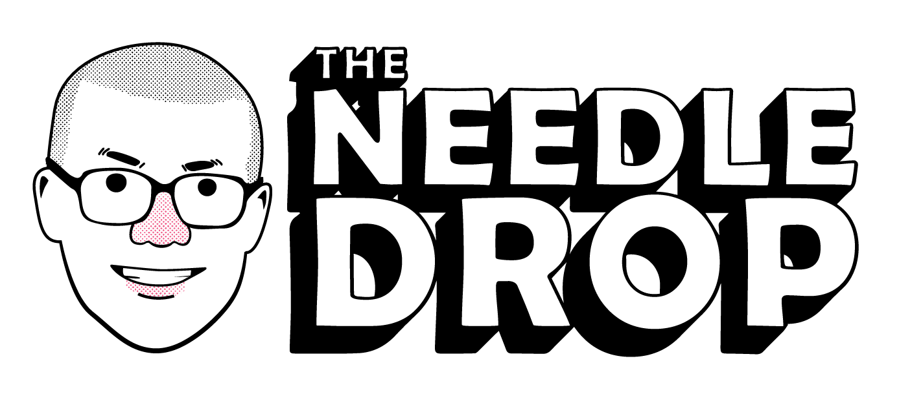

Focus on Web Design
The Needle Drop
- What is the company/organization? The Needle Drop
- What is the URL? www.theneedledrop.com
- What is the purpose of the site? It's a music review site that links to reviews, a podcast under the same name, and a youtube channel of the same name as well.
- Who is the intended audience? The intended audience is mainly anyone who subscribes to Anthony Fantano aka theneedledrop on Youtube, but also anyone interested in music.
- Do you believe the site reaches its audience? Yes, to a certain extent, because it is the home site for the company and the hub of all of the media. However, a lot of people just watch the content on Youtube and never even go to this website, and I don't think Fantano advertises the site much - but he does link to it in the video descripton.
- Was the site useful to you? Why or why not? Yes, but not much. I'd usually rather just go on Youtube or their other social media outlets, but I did find their other social media outlets through this website.
- List the colors and/or graphics that are used on the home page of this website, etc. The theme is mainly black and yellow and white. Graphics are all images and video thumbnails.
- How does the use of color and graphics enhance the website? I personally think the yellow color makes the website stand out, along with the logo. The black outlines on everything make each div stand out more. The graphics are nice because they change depending on which album reviews are most recent.